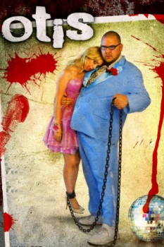

Country:United States, 100 minutes
Spoken languages:English, Portuguese, Hungarian
Genres:Comedy, Horror
Director(s):Tony Krantz
Writer(s):Erik Jendresen, Thomas Schnauz
Video Codec:Unknown
Number: 687


Certification:NR
Storyline:
After being captured and tortured by the psychopath Otis, teen cheerleader Riley Lawson escapes and informs her parents, who quickly sidestep sluggish FBI agents and take matters into their own hands. But the Lawsons' revenge plan hits a snag when Otis's unusual brother enters the picture.
Cast:
Medium: Original DVD,
Loaned: No
Aspect ratio: Unknown